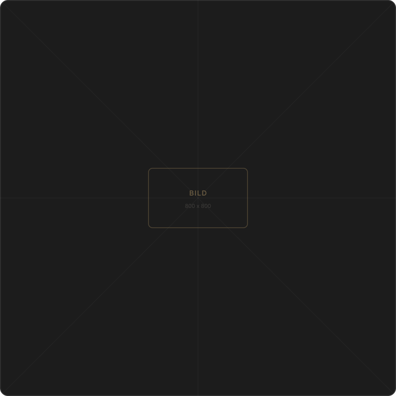

Wir verbinden technisches Know-how, intelligentes Softwaredenken und strategisches Design. Für Unternehmen, die sichtbar, verständlich und zukunftsfähig sein wollen.

TSD Design steht für die Verbindung dreier Disziplinen, die in der Praxis oft getrennt gedacht werden: Technik, Software und Design. Wir sind überzeugt, dass nachhaltige Lösungen nur dort entstehen, wo diese Bereiche ineinandergreifen.
Unser Ansatz ist geprägt von strategischer Klarheit und dem Anspruch, für jedes Unternehmen maßgeschneiderte Lösungen zu entwickeln – keine Vorlagen, keine Kompromisse.
Jede Disziplin ist für sich stark – zusammen bilden sie ein KI-gestütztes Kreativsystem, das Unternehmen ganzheitlich nach vorne bringt.
Wir bereiten komplexe technische Inhalte so auf, dass sie für Anwender klar, nachvollziehbar und sicher nutzbar sind. Verständliche Dokumentation ist die Grundlage für reibungslose Prozesse und sichere Anwendungen.
Wir entwickeln intelligente, KI-gestützte Lösungen, die Ihre Prozesse effizienter machen und Ihre Kommunikation auf ein neues Level heben. Keine Standardlösungen – sondern Werkzeuge, die zu Ihrem Unternehmen passen.
Design ist für uns keine Dekoration, sondern strategische Gestaltung mit Wirkung. Wir schaffen visuelle Identitäten, die Ihre Marke positionieren und Vertrauen aufbauen – konsistent und wiedererkennbar.
Komplexes einfach machen – in Strategie, Kommunikation und Gestaltung.
KI-gestützte Prozesse, die skalierbar, effizient und reproduzierbar sind.
Handwerkliche Exzellenz in jedem Detail – von der Dokumentation bis zum Pixel.
Lösungen, die nicht nur gut aussehen, sondern messbare Ergebnisse liefern.

Georgos und Denis Papadopulos gründeten TSD Design mit der Überzeugung, dass die besten Ergebnisse dort entstehen, wo technisches Verständnis, digitale Intelligenz und gestalterisches Denken zusammenkommen.
Mit einem Hintergrund, der alle drei Disziplinen verbindet, führen sie ein Team, das für Unternehmen arbeitet, die mehr wollen als Standard – maßgeschneiderte Lösungen, die heute funktionieren und morgen skalieren.
Erzählen Sie uns von Ihrem Vorhaben – wir entwickeln eine Lösung, die zu Ihrem Unternehmen passt.
Erstgespräch vereinbaren